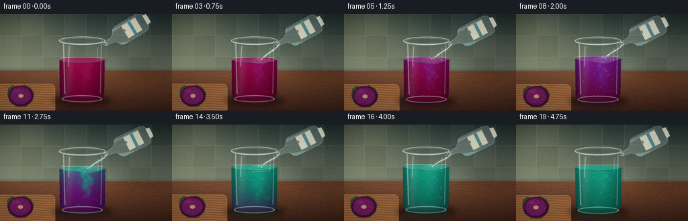
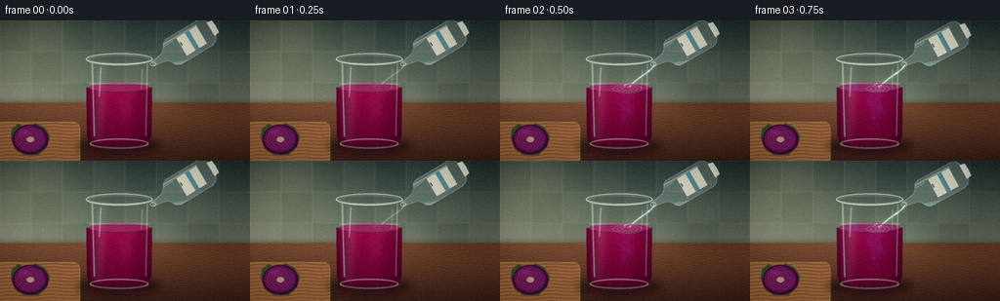
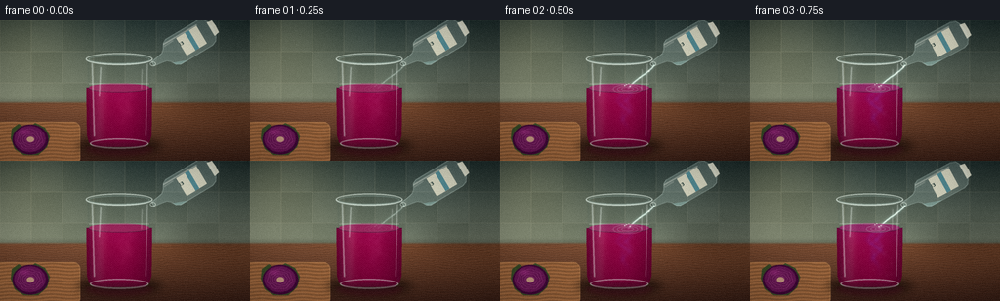
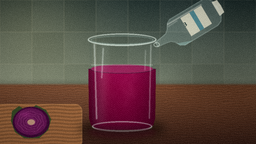
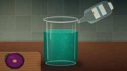
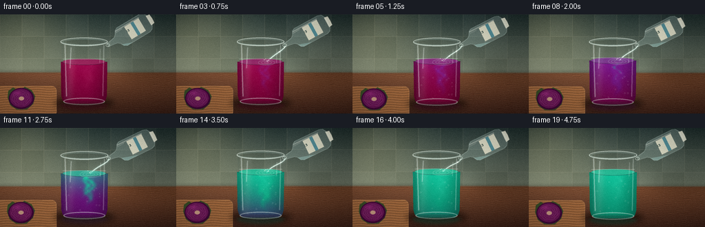
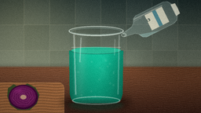

CODING AGENTS AS PIXEL WORLD MODELS
traex/DeepSeek-V4.1-Flash · material_0032
点击播放 · 原生 RGB 像素
逐轮保存的候选
回放视频、检查图与代码变化。
每份候选均可单独播放。实际图片检查记录在下方工具轨迹中。
候选 01播放与检查图
点击播放 · 原生 RGB 像素


展开代码变化
--- 上一保存版本
+++ 本次保存版本
@@ -0,0 +1,606 @@
+from pathlib import Path
+import math
+
+import numpy as np
+from PIL import Image, ImageDraw, ImageFilter, ImageFont
+
+import artifact_io
+
+
+ROOT = Path(__file__).resolve().parent
+W, H = 256, 144
+S = 4
+RW, RH = W * S, H * S
+FPS = 4.0
+FRAMES = 20
+
+x_axis = (np.arange(RW, dtype=np.float32) + 0.5) / S
+y_axis = (np.arange(RH, dtype=np.float32) + 0.5) / S
+X, Y = np.meshgrid(x_axis, y_axis)
+
+
+def smoothstep(value):
+ value = np.clip(value, 0.0, 1.0)
+ return value * value * (3.0 - 2.0 * value)
+
+
+def ease(value):
+ value = min(max(float(value), 0.0), 1.0)
+ return value * value * (3.0 - 2.0 * value)
+
+
+def rgb255(color):
+ return np.asarray(color, dtype=np.float32) / 255.0
+
+
+def blend(base, color, mask, opacity=1.0):
+ alpha = np.clip(mask * opacity, 0.0, 1.0)[..., None]
+ return base * (1.0 - alpha) + np.asarray(color, dtype=np.float32) * alpha
+
+
+def blur_image(array, radius):
+ if radius <= 0:
+ return array
+ if array.ndim == 2:
+ image = Image.fromarray(np.uint8(np.clip(array, 0.0, 1.0) * 255.0), "L")
+ return np.asarray(image.filter(ImageFilter.GaussianBlur(radius)), dtype=np.float32) / 255.0
+ image = Image.fromarray(np.uint8(np.clip(array, 0.0, 1.0) * 255.0), "RGB")
+ return np.asarray(image.filter(ImageFilter.GaussianBlur(radius)), dtype=np.float32) / 255.0
+
+
+def new_mask():
+ return Image.new("L", (RW, RH), 0)
+
+
+def p(value):
+ return int(round(value * S))
+
+
+def ellipse_box(cx, cy, rx, ry):
+ return [p(cx - rx), p(cy - ry), p(cx + rx), p(cy + ry)]
+
+
+def make_background():
+ wall_top = rgb255((42, 58, 57))
+ wall_bottom = rgb255((121, 131, 113))
+ wall_t = np.clip(Y / 88.0, 0.0, 1.0)[..., None]
+ wall = wall_top * (1.0 - wall_t) + wall_bottom * wall_t
+
+ tile_x = np.floor(X / 32.0).astype(np.int32)
+ tile_y = np.floor(Y / 32.0).astype(np.int32)
+ tile_variation = (((tile_x * 11 + tile_y * 17) % 7) - 3) * 0.0055
+ wall = wall + tile_variation[..., None]
+
+ edge_x = np.minimum(np.mod(X, 32.0), 32.0 - np.mod(X, 32.0))
+ edge_y = np.minimum(np.mod(Y, 32.0), 32.0 - np.mod(Y, 32.0))
+ grout = np.exp(-(edge_x / 0.36) ** 2) + np.exp(-(edge_y / 0.36) ** 2)
+ grout = np.clip(grout, 0.0, 1.0) * (Y < 89.0)
+ wall = blend(wall, rgb255((184, 181, 155)), grout, 0.16)
+
+ glow = np.exp(-(((X - 24.0) / 75.0) ** 2 + ((Y - 18.0) / 64.0) ** 2))
+ wall = wall + glow[..., None] * np.asarray([0.16, 0.14, 0.09], dtype=np.float32)
+
+ rng = np.random.default_rng(17)
+ coarse = rng.random((34, 61)).astype(np.float32)
+ coarse_img = Image.fromarray(np.uint8(coarse * 255.0), "L").resize((RW, RH), Image.Resampling.BICUBIC)
+ texture = np.asarray(coarse_img, dtype=np.float32) / 255.0
+
+ table_top = rgb255((123, 78, 51))
+ table_bottom = rgb255((55, 33, 27))
+ table_t = np.clip((Y - 82.0) / 70.0, 0.0, 1.0)[..., None]
+ table = table_top * (1.0 - table_t) + table_bottom * table_t
+ grain = 0.5 + 0.5 * np.sin(Y * 2.7 + 1.8 * np.sin(X * 0.071 + 0.8) + texture * 5.2)
+ grain = blur_image(grain, 0.32 * S)
+ table = table * (0.87 + 0.18 * grain[..., None])
+ table = table + np.exp(-(((X - 74.0) / 100.0) ** 2 + ((Y - 96.0) / 32.0) ** 2))[..., None] * 0.035
+
+ table_mask = smoothstep((Y - 82.5) / 3.5)
+ image = wall * (1.0 - table_mask[..., None]) + table * table_mask[..., None]
+ horizon_shadow = np.exp(-((Y - 83.0) / 2.8) ** 2) * 0.12
+ image = image * (1.0 - horizon_shadow[..., None])
+
+ left_shadow = np.exp(-(((X - 236.0) / 55.0) ** 2 + ((Y - 36.0) / 80.0) ** 2))
+ image = image * (1.0 - left_shadow[..., None] * 0.10)
+ return np.clip(image, 0.0, 1.0)
+
+
+def add_shadow(image, cx, cy, rx, ry, opacity, blur):
+ mask_img = new_mask()
+ draw = ImageDraw.Draw(mask_img)
+ draw.ellipse(ellipse_box(cx, cy, rx, ry), fill=255)
+ mask = np.asarray(mask_img, dtype=np.float32) / 255.0
+ mask = blur_image(mask, blur * S)
+ return image * (1.0 - mask[..., None] * opacity)
+
+
+def add_cutting_board_and_cabbage(image):
+ image = add_shadow(image, 34.0, 132.5, 43.0, 8.0, 0.35, 3.0)
+
+ board_img = new_mask()
+ draw = ImageDraw.Draw(board_img)
+ draw.rounded_rectangle([p(-8), p(104), p(82), p(148)], radius=p(7), fill=255)
+ board_mask = np.asarray(board_img, dtype=np.float32) / 255.0
+ board_mask = blur_image(board_mask, 0.22 * S)
+
+ board_color = rgb255((151, 102, 64))
+ board_texture = 0.5 + 0.5 * np.sin(Y * 1.8 + X * 0.035 + 1.4 * np.sin(X * 0.15))
+ board = board_color[None, None, :] * (0.85 + 0.22 * board_texture[..., None])
+ image = blend(image, np.zeros(3, dtype=np.float32), board_mask, 0.16)
+ image = image * (1.0 - board_mask[..., None]) + board * board_mask[..., None]
+
+ board_rim = new_mask()
+ draw = ImageDraw.Draw(board_rim)
+ draw.rounded_rectangle([p(-8), p(104), p(82), p(148)], radius=p(7), outline=255, width=p(0.8))
+ rim_mask = blur_image(np.asarray(board_rim, dtype=np.float32) / 255.0, 0.35 * S)
+ image = blend(image, rgb255((218, 172, 117)), rim_mask, 0.28)
+
+ leaf_img = new_mask()
+ draw = ImageDraw.Draw(leaf_img)
+ leaf_points = [
+ (11, 121), (12, 111), (19, 106), (27, 111), (36, 105),
+ (46, 110), (51, 119), (48, 130), (39, 138), (24, 138),
+ (15, 132),
+ ]
+ draw.polygon([(p(px), p(py)) for px, py in leaf_points], fill=255)
+ leaf_mask = blur_image(np.asarray(leaf_img, dtype=np.float32) / 255.0, 0.18 * S)
+ image = blend(image, rgb255((54, 76, 42)), leaf_mask, 0.95)
+
+ outer_img = new_mask()
+ draw = ImageDraw.Draw(outer_img)
+ draw.ellipse(ellipse_box(31.0, 122.0, 18.2, 15.2), fill=255)
+ outer_mask = blur_image(np.asarray(outer_img, dtype=np.float32) / 255.0, 0.2 * S)
+ image = blend(image, rgb255((65, 13, 58)), outer_mask, 0.98)
+
+ head_img = new_mask()
+ draw = ImageDraw.Draw(head_img)
+ draw.ellipse(ellipse_box(30.5, 121.5, 16.0, 13.3), fill=255)
+ head_mask = blur_image(np.asarray(head_img, dtype=np.float32) / 255.0, 0.18 * S)
+ image = blend(image, rgb255((103, 28, 86)), head_mask, 0.96)
+
+ rings = new_mask()
+ draw = ImageDraw.Draw(rings)
+ for index, scale in enumerate((0.82, 0.64, 0.47, 0.30)):
+ points = []
+ for step in range(73):
+ theta = 2.0 * math.pi * step / 72.0
+ wobble = 1.0 + 0.055 * math.sin(theta * 7.0 + index * 1.3)
+ px = 30.5 + 15.2 * scale * wobble * math.cos(theta)
+ py = 121.5 + 12.4 * scale * wobble * math.sin(theta)
+ points.append((p(px), p(py)))
+ draw.line(points, fill=255, width=max(1, p(0.52)), joint="curve")
+ ring_mask = np.asarray(rings, dtype=np.float32) / 255.0
+ ring_mask = blur_image(ring_mask, 0.22 * S) * head_mask
+ image = blend(image, rgb255((170, 80, 143)), ring_mask, 0.55)
+
+ core_img = new_mask()
+ draw = ImageDraw.Draw(core_img)
+ draw.ellipse(ellipse_box(31.0, 122.0, 3.7, 2.8), fill=255)
+ core_mask = blur_image(np.asarray(core_img, dtype=np.float32) / 255.0, 0.25 * S)
+ image = blend(image, rgb255((218, 191, 143)), core_mask, 0.75)
+
+ gloss = np.exp(-(((X - 25.0) / 6.0) ** 2 + ((Y - 114.5) / 3.0) ** 2)) * head_mask
+ image = image + gloss[..., None] * np.asarray([0.10, 0.035, 0.08], dtype=np.float32)
+ return np.clip(image, 0.0, 1.0)
+
+
+def glass_body_mask():
+ mask_img = new_mask()
+ draw = ImageDraw.Draw(mask_img)
+ points = [
+ (88.0, 39.5), (156.0, 39.5), (155.0, 118.0), (153.0, 125.0),
+ (147.5, 129.5), (96.5, 129.5), (91.0, 125.0), (89.0, 118.0),
+ ]
+ draw.polygon([(p(px), p(py)) for px, py in points], fill=255)
+ return blur_image(np.asarray(mask_img, dtype=np.float32) / 255.0, 0.20 * S)
+
+
+GLASS_MASK = glass_body_mask()
+
+
+def piecewise_liquid_color(mix):
+ mix = np.clip(mix, 0.0, 1.0)[..., None]
+ start = rgb255((142, 9, 71))
+ middle = rgb255((113, 24, 132))
+ finish = rgb255((18, 148, 125))
+ first_t = smoothstep(mix / 0.58)
+ second_t = smoothstep((mix - 0.58) / 0.42)
+ return (start * (1.0 - first_t) + middle * first_t) * (1.0 - second_t) + finish * second_t
+
+
+def draw_liquid(image, t, surface, pour):
+ dx = X - 122.0
+ depth_bottom = 126.5
+ half_width = 31.0
+ ellipse_term = np.clip(1.0 - (dx / half_width) ** 2, 0.0, 1.0)
+ front_curve = surface + 4.25 * np.sqrt(ellipse_term)
+ liquid_body = GLASS_MASK * (Y >= front_curve)
+ depth = np.clip((Y - surface) / (depth_bottom - surface), 0.0, 1.0)
+
+ global_mix = smoothstep(np.clip((t - 0.19 * depth + 0.018) / 0.82, 0.0, 1.0))
+ plume = np.zeros_like(X)
+ for index in range(4):
+ phase = (index * 0.23 + t * 0.09) % 1.0
+ center_y = surface + 7.0 + phase * 36.0
+ center_x = 128.5 + (5.5 + 2.0 * math.sin(index * 1.7)) * np.sin(
+ (Y - surface) * 0.19 + index * 1.65 + t * 5.0
+ )
+ ribbon = np.exp(-((Y - center_y) / 15.0) ** 2) * np.exp(-((X - center_x) / 3.6) ** 2)
+ plume += ribbon
+ plume = np.clip(plume / 1.8, 0.0, 1.0)
+ local_mix = np.clip(
+ global_mix + plume * (0.18 + 0.07 * math.sin(t * 5.0)) * pour,
+ 0.0,
+ 1.0,
+ )
+ liquid_color = piecewise_liquid_color(local_mix)
+
+ side_shade = 1.0 - 0.30 * (np.abs(dx) / half_width) ** 1.8
+ vertical_shade = 1.06 - 0.35 * depth
+ liquid_color = liquid_color * (side_shade * vertical_shade)[..., None]
+
+ window_band = np.exp(-((X - 104.5) / 7.2) ** 2) * np.clip(1.0 - depth * 0.75, 0.25, 1.0)
+ liquid_color = liquid_color + window_band[..., None] * np.asarray([0.075, 0.045, 0.045], dtype=np.float32)
+ cloud_light = np.exp(-(((X - 132.0) / 13.0) ** 2 + ((Y - (surface + 18.0)) / 22.0) ** 2))
+ liquid_color = liquid_color + cloud_light[..., None] * plume[..., None] * 0.045
+
+ fine = 0.012 * np.sin(X * 2.4 + Y * 3.1 + t * 7.0) + 0.007 * np.sin(X * 5.7 - Y * 1.8)
+ liquid_color = liquid_color + fine[..., None]
+ image = blend(image, np.clip(liquid_color, 0.0, 1.0), liquid_body, 0.965)
+
+ surface_mask = (
+ ((dx / half_width) ** 2 + ((Y - surface) / 4.4) ** 2 <= 1.0).astype(np.float32)
+ * GLASS_MASK
+ )
+ surface_mask = blur_image(surface_mask, 0.22 * S)
+ surface_mix = np.clip(global_mix + 0.09, 0.0, 1.0)
+ surface_color = piecewise_liquid_color(surface_mix) * 1.11
+ surface_gradient = np.clip(0.72 + (Y - (surface - 4.4)) / 10.0, 0.0, 1.0)
+ surface_color = surface_color * (0.70 + 0.35 * surface_gradient[..., None])
+ image = blend(image, np.clip(surface_color, 0.0, 1.0), surface_mask, 0.72)
+
+ meniscus = liquid_body * np.exp(-((Y - front_curve) / 0.55) ** 2)
+ image = blend(image, rgb255((29, 47, 52)), meniscus, 0.55)
+ back_meniscus = np.exp(-((Y - (surface - 3.8)) / 0.45) ** 2) * (np.abs(dx) < half_width) * GLASS_MASK
+ image = blend(image, rgb255((211, 237, 220)), back_meniscus, 0.40)
+
+ ring_img = new_mask()
+ draw = ImageDraw.Draw(ring_img)
+ for index in range(3):
+ phase = (t * 2.15 + index / 3.0) % 1.0
+ rx = 3.2 + 13.0 * phase
+ ry = 1.0 + 4.0 * phase
+ draw.ellipse(
+ ellipse_box(130.5, surface + 1.2, rx, ry),
+ outline=255,
+ width=max(1, p(0.62)),
+ )
+ ripple_mask = np.asarray(ring_img, dtype=np.float32) / 255.0
+ ripple_mask = blur_image(ripple_mask, 0.28 * S) * (liquid_body + surface_mask > 0.2) * pour
+ image = blend(image, rgb255((208, 240, 227)), ripple_mask, 0.38)
+
+ bubble_img = new_mask()
+ draw = ImageDraw.Draw(bubble_img)
+ rng = np.random.default_rng(53)
+ for index in range(15):
+ bx = 99.0 + rng.random() * 45.0
+ speed = 7.0 + rng.random() * 11.0
+ by = 124.0 - ((t * speed + rng.random() * 55.0) % 55.0)
+ if by > surface + 3.0 and by < 124.0:
+ radius = 0.45 + rng.random() * 0.55
+ draw.ellipse(ellipse_box(bx, by, radius, radius), outline=255, width=max(1, p(0.34)))
+ bubble_mask = np.asarray(bubble_img, dtype=np.float32) / 255.0
+ bubble_mask = blur_image(bubble_mask, 0.20 * S) * liquid_body * smoothstep((t - 0.10) / 0.15)
+ image = blend(image, rgb255((225, 245, 228)), bubble_mask, 0.38)
+
+ if pour > 0.03:
+ splash_img = new_mask()
+ draw = ImageDraw.Draw(splash_img)
+ for index in range(4):
+ phase = (t * 3.0 + index * 0.27) % 1.0
+ sx = 130.5 + (index - 1.5) * (1.6 + 1.1 * phase)
+ sy = surface - 1.2 - 3.8 * phase
+ radius = 0.42 + 0.25 * (1.0 - phase)
+ draw.ellipse(ellipse_box(sx, sy, radius, radius * 0.7), fill=255)
+ splash_mask = blur_image(np.asarray(splash_img, dtype=np.float32) / 255.0, 0.20 * S) * pour
+ image = blend(image, rgb255((238, 249, 237)), splash_mask, 0.75)
+ return image
+
+
+def add_glass_front(image):
+ broad = new_mask()
+ draw = ImageDraw.Draw(broad)
+ draw.polygon(
+ [(p(98.0), p(43.0)), (p(109.0), p(43.0)), (p(104.0), p(124.0)), (p(94.0), p(124.0))],
+ fill=255,
+ )
+ broad_mask = np.asarray(broad, dtype=np.float32) / 255.0
+ broad_mask = blur_image(broad_mask, 2.3 * S) * GLASS_MASK
+ image = blend(image, rgb255((223, 241, 233)), broad_mask, 0.075)
+
+ highlights = new_mask()
+ draw = ImageDraw.Draw(highlights)
+ draw.line([(p(94.2), p(44.0)), (p(96.5), p(119.0))], fill=255, width=max(1, p(1.35)))
+ draw.line([(p(150.8), p(44.5)), (p(149.2), p(118.5))], fill=255, width=max(1, p(0.85)))
+ draw.line([(p(103.0), p(48.0)), (p(101.4), p(78.0))], fill=255, width=max(1, p(1.1)))
+ draw.line([(p(145.2), p(50.0)), (p(144.8), p(70.0))], fill=255, width=max(1, p(0.55)))
+ highlight_mask = np.asarray(highlights, dtype=np.float32) / 255.0
+ highlight_mask = blur_image(highlight_mask, 0.45 * S) * GLASS_MASK
+ image = blend(image, rgb255((239, 251, 246)), highlight_mask, 0.52)
+
+ side_shade = new_mask()
+ draw = ImageDraw.Draw(side_shade)
+ draw.line([(p(90.0), p(42.0)), (p(93.0), p(124.0))], fill=255, width=max(1, p(1.0)))
+ draw.line([(p(154.0), p(42.0)), (p(151.5), p(124.0))], fill=255, width=max(1, p(0.8)))
+ side_mask = np.asarray(side_shade, dtype=np.float32) / 255.0
+ side_mask = blur_image(side_mask, 0.7 * S) * GLASS_MASK
+ image = blend(image, rgb255((50, 76, 78)), side_mask, 0.18)
+
+ rim = new_mask()
+ draw = ImageDraw.Draw(rim)
+ draw.ellipse(ellipse_box(122.0, 39.6, 34.3, 6.1), outline=255, width=max(1, p(1.0)))
+ draw.arc(ellipse_box(122.0, 39.6, 34.3, 6.1), 0, 180, fill=255, width=max(1, p(1.45)))
+ rim_mask = np.asarray(rim, dtype=np.float32) / 255.0
+ rim_mask = blur_image(rim_mask, 0.30 * S)
+ image = blend(image, rgb255((230, 246, 237)), rim_mask, 0.76)
+
+ inner_rim = new_mask()
+ draw = ImageDraw.Draw(inner_rim)
+ draw.ellipse(ellipse_box(122.0, 39.8, 31.2, 4.35), outline=255, width=max(1, p(0.65)))
+ inner_mask = np.asarray(inner_rim, dtype=np.float32) / 255.0
+ inner_mask = blur_image(inner_mask, 0.35 * S)
+ image = blend(image, rgb255((181, 216, 210)), inner_mask, 0.40)
+
+ base = new_mask()
+ draw = ImageDraw.Draw(base)
+ draw.ellipse(ellipse_box(122.0, 126.3, 30.0, 5.1), outline=255, width=max(1, p(1.05)))
+ draw.arc(ellipse_box(122.0, 126.3, 30.0, 5.1), 0, 180, fill=255, width=max(1, p(1.5)))
+ base_mask = np.asarray(base, dtype=np.float32) / 255.0
+ base_mask = blur_image(base_mask, 0.32 * S)
+ image = blend(image, rgb255((224, 240, 230)), base_mask, 0.63)
+ return np.clip(image, 0.0, 1.0)
+
+
+def bottle_transform(t):
+ angle_deg = 31.0 - 4.5 * ease(t / 0.28) + 0.55 * math.sin(2.0 * math.pi * t)
+ angle = math.radians(angle_deg)
+ spout = (156.6 + 0.30 * math.sin(2.0 * math.pi * t), 44.2 + 0.45 * math.sin(2.0 * math.pi * t + 0.6))
+ ux, uy = math.cos(angle), -math.sin(angle)
+ vx, vy = math.sin(angle), math.cos(angle)
+
+ def point(u, v):
+ return (spout[0] + ux * u + vx * v, spout[1] + uy * u + vy * v)
+
+ return point, angle_deg
+
+
+def local_polygon(point, points):
+ return [(p(px), p(py)) for px, py in (point(u, v) for u, v in points)]
+
+
+def add_bottle(image, t):
+ point, angle_deg = bottle_transform(t)
+ outline = [
+ (0.0, -2.6), (7.0, -3.5), (13.5, -4.7), (17.0, -7.5),
+ (20.0, -12.8), (24.0, -15.0), (62.0, -15.0), (67.0, -13.2),
+ (70.0, -8.5), (71.0, 0.0), (70.0, 8.5), (67.0, 13.2),
+ (62.0, 15.0), (24.0, 15.0), (20.0, 12.8), (17.0, 7.5),
+ (13.5, 4.7), (7.0, 3.5), (0.0, 2.6),
+ ]
+ mask_img = new_mask()
+ draw = ImageDraw.Draw(mask_img)
+ draw.polygon(local_polygon(point, outline), fill=255)
+ bottle_mask = blur_image(np.asarray(mask_img, dtype=np.float32) / 255.0, 0.18 * S)
+ image = blend(image, rgb255((188, 218, 211)), bottle_mask, 0.24)
+
+ liquid_mask = (Y > (47.0 - 0.18 * (X - 157.0) + 0.35 * math.sin(t * 8.0))) * bottle_mask
+ image = blend(image, rgb255((171, 226, 222)), liquid_mask, 0.31)
+
+ label_img = new_mask()
+ draw = ImageDraw.Draw(label_img)
+ label_points = [(34.0, -10.5), (58.0, -10.5), (58.0, 10.5), (34.0, 10.5)]
+ draw.polygon(local_polygon(point, label_points), fill=255)
+ label_mask = blur_image(np.asarray(label_img, dtype=np.float32) / 255.0, 0.16 * S)
+ image = blend(image, rgb255((231, 230, 207)), label_mask, 0.82)
+
+ band_img = new_mask()
+ draw = ImageDraw.Draw(band_img)
+ band_points = [(44.5, -10.5), (49.0, -10.5), (49.0, 10.5), (44.5, 10.5)]
+ draw.polygon(local_polygon(point, band_points), fill=255)
+ band_mask = blur_image(np.asarray(band_img, dtype=np.float32) / 255.0, 0.12 * S)
+ image = blend(image, rgb255((38, 112, 132)), band_mask, 0.75)
+
+ try:
+ font = ImageFont.truetype("/usr/share/fonts/truetype/dejavu/DejaVuSans-Bold.ttf", p(5.5))
+ except OSError:
+ font = ImageFont.load_default()
+ text_layer = Image.new("RGBA", (p(34), p(12)), (0, 0, 0, 0))
+ text_draw = ImageDraw.Draw(text_layer)
+ text_draw.text((p(0.4), p(0.2)), "NH3", font=font, fill=(25, 49, 48, 210))
+ text_layer = text_layer.rotate(angle_deg, resample=Image.Resampling.BICUBIC, expand=True)
+ label_center = point(40.0, 0.0)
+ text_x = int(round(label_center[0] * S - text_layer.width / 2))
+ text_y = int(round(label_center[1] * S - text_layer.height / 2))
+ text_arr = np.asarray(text_layer, dtype=np.float32) / 255.0
+ alpha = text_arr[..., 3]
+ x0 = max(0, text_x)
+ y0 = max(0, text_y)
+ x1 = min(RW, text_x + text_layer.width)
+ y1 = min(RH, text_y + text_layer.height)
+ if x1 > x0 and y1 > y0:
+ src = text_arr[y0 - text_y:y1 - text_y, x0 - text_x:x1 - text_x]
+ dst_alpha = src[..., 3:4] * label_mask[y0:y1, x0:x1, None]
+ region = image[y0:y1, x0:x1]
+ image[y0:y1, x0:x1] = region * (1.0 - dst_alpha) + src[..., :3] * dst_alpha
+
+ cap_img = new_mask()
+ draw = ImageDraw.Draw(cap_img)
+ cap_points = [(69.0, -8.0), (74.5, -7.0), (75.0, 0.0), (74.5, 7.0), (69.0, 8.0)]
+ draw.polygon(local_polygon(point, cap_points), fill=255)
+ cap_mask = blur_image(np.asarray(cap_img, dtype=np.float32) / 255.0, 0.18 * S)
+ image = blend(image, rgb255((218, 220, 202)), cap_mask, 0.92)
+
+ edge_img = new_mask()
+ draw = ImageDraw.Draw(edge_img)
+ draw.line(local_polygon(point, outline + [outline[0]]), fill=255, width=max(1, p(0.62)), joint="curve")
+ edge_mask = blur_image(np.asarray(edge_img, dtype=np.float32) / 255.0, 0.32 * S)
+ image = blend(image, rgb255((220, 242, 235)), edge_mask, 0.53)
+
+ glint_img = new_mask()
+ draw = ImageDraw.Draw(glint_img)
+ draw.line(local_polygon(point, [(18.0, -11.8), (59.0, -11.5)]), fill=255, width=max(1, p(1.0)))
+ draw.line(local_polygon(point, [(19.0, -9.5), (30.0, -9.8)]), fill=255, width=max(1, p(0.55)))
+ glint_mask = blur_image(np.asarray(glint_img, dtype=np.float32) / 255.0, 0.45 * S) * bottle_mask
+ image = blend(image, rgb255((247, 252, 240)), glint_mask, 0.54)
+
+ lip_img = new_mask()
+ draw = ImageDraw.Draw(lip_img)
+ lip_center = point(0.0, 0.0)
+ draw.ellipse(ellipse_box(lip_center[0], lip_center[1], 3.0, 2.3), outline=255, width=max(1, p(0.7)))
+ lip_mask = blur_image(np.asarray(lip_img, dtype=np.float32) / 255.0, 0.22 * S)
+ image = blend(image, rgb255((231, 245, 233)), lip_mask, 0.62)
+ return image, lip_center
+
+
+def bezier(start, control1, control2, end, count=90):
+ points = []
+ for index in range(count):
+ u = index / (count - 1)
+ a = (1.0 - u) ** 3
+ b = 3.0 * (1.0 - u) ** 2 * u
+ c = 3.0 * (1.0 - u) * u ** 2
+ d = u ** 3
+ px = a * start[0] + b * control1[0] + c * control2[0] + d * end[0]
+ py = a * start[1] + b * control1[1] + c * control2[1] + d * end[1]
+ points.append((p(px), p(py)))
+ return points
+
+
+def add_stream(image, t, spout_point, surface, pour):
+ if pour <= 0.01:
+ return image
+ start = (spout_point[0] + 1.0, spout_point[1] + 1.0)
+ end = (130.8 + 0.45 * math.sin(t * 8.0), surface + 0.8)
+ control1 = (start[0] - 4.0, start[1] + 8.0)
+ control2 = (end[0] + 9.0, end[1] - 12.0)
+ points = bezier(start, control1, control2, end)
+
+ glow = new_mask()
+ draw = ImageDraw.Draw(glow)
+ width = max(1, p(3.0 + 0.35 * math.sin(t * 11.0)))
+ draw.line(points, fill=255, width=width, joint="curve")
+ glow_mask = blur_image(np.asarray(glow, dtype=np.float32) / 255.0, 1.15 * S) * pour
+ image = blend(image, rgb255((194, 235, 226)), glow_mask, 0.16)
+
+ stream = new_mask()
+ draw = ImageDraw.Draw(stream)
+ width = max(1, p(1.55 + 0.22 * math.sin(t * 13.0)))
+ draw.line(points, fill=255, width=width, joint="curve")
+ stream_mask = np.asarray(stream, dtype=np.float32) / 255.0
+ stream_mask = blur_image(stream_mask, 0.28 * S) * pour
+ image = blend(image, rgb255((200, 237, 230)), stream_mask, 0.56)
+
+ core = new_mask()
+ draw = ImageDraw.Draw(core)
+ draw.line(points, fill=255, width=max(1, p(0.62)), joint="curve")
+ core_mask = blur_image(np.asarray(core, dtype=np.float32) / 255.0, 0.25 * S) * pour
+ image = blend(image, rgb255((247, 251, 239)), core_mask, 0.77)
+
+ sparkle = new_mask()
+ draw = ImageDraw.Draw(sparkle)
+ for index in range(3):
+ phase = (t * 2.7 + index / 3.0) % 1.0
+ position = min(len(points) - 1, int(phase * (len(points) - 1)))
+ px, py = points[position]
+ radius = 0.65 + 0.35 * math.sin((t + index) * 9.0)
+ draw.ellipse([px - p(radius), py - p(radius), px + p(radius), py + p(radius)], fill=255)
+ sparkle_mask = blur_image(np.asarray(sparkle, dtype=np.float32) / 255.0, 0.28 * S) * pour
+ image = blend(image, rgb255((252, 255, 246)), sparkle_mask, 0.65)
+ return image
+
+
+def add_reflection(image, liquid_color):
+ reflection_img = new_mask()
+ draw = ImageDraw.Draw(reflection_img)
+ draw.ellipse(ellipse_box(122.0, 132.0, 34.0, 6.8), fill=255)
+ reflection_mask = np.asarray(reflection_img, dtype=np.float32) / 255.0
+ reflection_mask = blur_image(reflection_mask, 2.2 * S) * (Y > 129.0)
+ image = blend(image, liquid_color * 0.70, reflection_mask, 0.22)
+
+ contact_img = new_mask()
+ draw = ImageDraw.Draw(contact_img)
+ draw.ellipse(ellipse_box(122.0, 129.4, 29.5, 4.1), fill=255)
+ contact_mask = blur_image(np.asarray(contact_img, dtype=np.float32) / 255.0, 1.5 * S)
+ image = blend(image, rgb255((37, 31, 28)), contact_mask, 0.30)
+ return image
+
+
+def postprocess(image, t):
+ lum = np.max(image, axis=2)
+ bloom_mask = np.clip((lum - 0.70) / 0.30, 0.0, 1.0)
+ bloom = image * bloom_mask[..., None]
+ bloom = blur_image(bloom, 3.2 * S)
+ image = 1.0 - (1.0 - image) * (1.0 - bloom * 0.18)
+
+ image = np.clip((image - 0.5) * 1.055 + 0.5, 0.0, 1.0)
+ image[..., 0] = image[..., 0] * 1.012
+ image[..., 2] = image[..., 2] * 0.995
+
+ nx = (X - 122.0) / 150.0
+ ny = (Y - 72.0) / 92.0
+ vignette = np.clip(1.0 - 0.17 * (nx * nx + ny * ny), 0.75, 1.0)
+ image = image * vignette[..., None]
+
+ image = np.clip(image, 0.0, 1.0)
+ pil = Image.fromarray(np.uint8(image * 255.0), "RGB")
+ zoom = 1.0 + 0.018 * t
+ crop_w = int(round(W / zoom))
+ crop_h = int(round(H / zoom))
+ left = (W - crop_w) // 2
+ top = (H - crop_h) // 2
+ pil = pil.resize((RW, RH), Image.Resampling.LANCZOS)
+ pil = pil.crop((left * S, top * S, (left + crop_w) * S, (top + crop_h) * S))
+ pil = pil.resize((W, H), Image.Resampling.LANCZOS)
+ frame = np.asarray(pil, dtype=np.float32)
+
+ rng = np.random.default_rng(1000 + int(round(t * 1000)))
+ grain = rng.normal(0.0, 2.1, (H, W, 1)).astype(np.float32)
+ frame = np.clip(frame + grain, 0.0, 255.0)
+ return frame.astype(np.uint8)
+
+
+def render_frame(t):
+ image = make_background()
+ image = add_cutting_board_and_cabbage(image)
+ image = add_shadow(image, 122.0, 128.8, 44.0, 9.0, 0.43, 4.2)
+ image = add_shadow(image, 216.0, 77.0, 44.0, 18.0, 0.12, 8.0)
+
+ image, spout_point = add_bottle(image, t)
+
+ pour = ease((t - 0.015) / 0.11) * (1.0 - ease((t - 0.86) / 0.14))
+ surface = 68.8 - 5.0 * ease(t / 0.92) + 0.34 * math.sin(2.0 * math.pi * (t * 2.25)) * (0.35 + 0.65 * pour)
+
+ image = add_stream(image, t, spout_point, surface, pour)
+ image = draw_liquid(image, t, surface, pour)
+ image = add_glass_front(image)
+
+ liquid_mix = np.clip(smoothstep((t + 0.01) / 0.9), 0.0, 1.0)
+ reflection_color = piecewise_liquid_color(np.asarray(liquid_mix))
+ image = add_reflection(image, reflection_color)
+
+ if pour > 0.04:
+ mist = np.exp(-(((X - 132.0) / 12.0) ** 2 + ((Y - (surface - 8.0)) / 11.0) ** 2))
+ image = image + mist[..., None] * pour * np.asarray([0.012, 0.016, 0.013], dtype=np.float32)
+ return postprocess(np.clip(image, 0.0, 1.0), t)
+
+
+def main():
+ frames = np.stack([render_frame(index / (FRAMES - 1)) for index in range(FRAMES)], axis=0)
+ artifact_io.save(frames, ROOT)
+
+ preview = Image.fromarray(frames[-1])
+ preview.save(ROOT / "preview_final.png")
+ print(f"saved {frames.shape} frames to {ROOT}")
+
+
+if __name__ == "__main__":
+ main()
候选 02播放与检查图
点击播放 · 原生 RGB 像素


展开代码变化
--- 上一保存版本
+++ 本次保存版本
@@ -201,7 +201,7 @@
mix = np.clip(mix, 0.0, 1.0)[..., None]
start = rgb255((142, 9, 71))
middle = rgb255((113, 24, 132))
- finish = rgb255((18, 148, 125))
+ finish = rgb255((17, 177, 142))
first_t = smoothstep(mix / 0.58)
second_t = smoothstep((mix - 0.58) / 0.42)
return (start * (1.0 - first_t) + middle * first_t) * (1.0 - second_t) + finish * second_t
@@ -234,8 +234,8 @@
)
liquid_color = piecewise_liquid_color(local_mix)
- side_shade = 1.0 - 0.30 * (np.abs(dx) / half_width) ** 1.8
- vertical_shade = 1.06 - 0.35 * depth
+ side_shade = 1.0 - 0.24 * (np.abs(dx) / half_width) ** 1.8
+ vertical_shade = 1.10 - 0.27 * depth
liquid_color = liquid_color * (side_shade * vertical_shade)[..., None]
window_band = np.exp(-((X - 104.5) / 7.2) ** 2) * np.clip(1.0 - depth * 0.75, 0.25, 1.0)
@@ -410,12 +410,12 @@
image = blend(image, rgb255((38, 112, 132)), band_mask, 0.75)
try:
- font = ImageFont.truetype("/usr/share/fonts/truetype/dejavu/DejaVuSans-Bold.ttf", p(5.5))
+ font = ImageFont.truetype("/usr/share/fonts/truetype/dejavu/DejaVuSans-Bold.ttf", p(4.8))
except OSError:
font = ImageFont.load_default()
- text_layer = Image.new("RGBA", (p(34), p(12)), (0, 0, 0, 0))
+ text_layer = Image.new("RGBA", (p(27), p(10)), (0, 0, 0, 0))
text_draw = ImageDraw.Draw(text_layer)
- text_draw.text((p(0.4), p(0.2)), "NH3", font=font, fill=(25, 49, 48, 210))
+ text_draw.text((p(0.3), p(-0.5)), "NH3", font=font, fill=(25, 49, 48, 225))
text_layer = text_layer.rotate(angle_deg, resample=Image.Resampling.BICUBIC, expand=True)
label_center = point(40.0, 0.0)
text_x = int(round(label_center[0] * S - text_layer.width / 2))
@@ -489,7 +489,7 @@
width = max(1, p(3.0 + 0.35 * math.sin(t * 11.0)))
draw.line(points, fill=255, width=width, joint="curve")
glow_mask = blur_image(np.asarray(glow, dtype=np.float32) / 255.0, 1.15 * S) * pour
- image = blend(image, rgb255((194, 235, 226)), glow_mask, 0.16)
+ image = blend(image, rgb255((194, 235, 226)), glow_mask, 0.21)
stream = new_mask()
draw = ImageDraw.Draw(stream)
@@ -497,13 +497,13 @@
draw.line(points, fill=255, width=width, joint="curve")
stream_mask = np.asarray(stream, dtype=np.float32) / 255.0
stream_mask = blur_image(stream_mask, 0.28 * S) * pour
- image = blend(image, rgb255((200, 237, 230)), stream_mask, 0.56)
+ image = blend(image, rgb255((207, 242, 233)), stream_mask, 0.70)
core = new_mask()
draw = ImageDraw.Draw(core)
draw.line(points, fill=255, width=max(1, p(0.62)), joint="curve")
core_mask = blur_image(np.asarray(core, dtype=np.float32) / 255.0, 0.25 * S) * pour
- image = blend(image, rgb255((247, 251, 239)), core_mask, 0.77)
+ image = blend(image, rgb255((250, 253, 241)), core_mask, 0.84)
sparkle = new_mask()
draw = ImageDraw.Draw(sparkle)
可观测工具轨迹
实际执行的命令与返回图片。
命令 1exit 0
/bin/bash -c "pwd && rg --files -g '"'!*.mp4'"' -g '"'!*.webm'"' -g '"'!*.gif'"' | sort | sed -n '1,200p'"
命令 2exit 0
/bin/bash -c "printf '%s\\n' '--- prompt.txt ---'; sed -n '1,240p' prompt.txt; printf '%s\\n' '--- GENERATION_RULES.md ---'; sed -n '1,260p' GENERATION_RULES.md; printf '%s\\n' '--- task_spec.json ---'; sed -n '1,260p' task_spec.json"
命令 3exit 0
/bin/bash -c "find . -maxdepth 2 -type f -printf '%p %s bytes\\n' | sort | sed -n '1,200p'"
命令 4exit 0
/bin/bash -c "sed -n '1,260p' artifact_io.py"
命令 5exit 0
/bin/bash -c "sed -n '1,260p' player_template.html"
命令 6exit 0
/bin/bash -c "python - <<'PY' import importlib.util for m in ['numpy','PIL','cv2','scipy','imageio','matplotlib']: print(m, bool(importlib.util.find_spec(m))) PY command -v ffmpeg || true ffmpeg -version 2>/dev/null | sed -n '1,3p'"
命令 7exit 1
/bin/bash -c 'python generate.py'
命令 8exit 0
/bin/bash -c 'python generate.py'
命令 9exit 0
/bin/bash -c "python - <<'PY'
from PIL import ImageFont
for size in [16,18,20,22,24]:
f=ImageFont.truetype('/usr/share/fonts/truetype/dejavu/DejaVuSans-Bold.ttf',size)
print(size, f.getbbox('NH3'), f.getlength('NH3'))
PY"命令 10exit 0
/bin/bash -c 'python generate.py'
命令 11exit 0
/bin/bash -c "python - <<'PY'
from pathlib import Path
import json
import numpy as np
from PIL import Image
root=Path('.')
frames=np.stack([np.asarray(Image.open(root/'frames'/f'{i:02d}.png').convert('RGB')) for i in range(20)])
spec=json.loads((root/'task_spec.json').read_text())
print('shape', frames.shape, 'dtype', frames.dtype, 'spec', spec['width'], spec['height'], spec['frames'], spec['fps'])
print('rgb_range', int(frames.min()), int(frames.max()))
print('frame_std_mean', round(float(frames.std()), 3))
print('unique_colors_frame0', len(np.unique(frames[0].reshape(-1,3),axis=0)))
print('unique_colors_frame19', len(np.unique(frames[19].reshape(-1,3),axis=0)))
for i in [0,5,10,15,19]:
f=frames[i].astype(float)
glass=f[45:125,90:155]
print(i, 'glass_mean_rgb', np.round(glass.mean(axis=(0,1)),1).tolist())
print('artifact_sizes', {p.name:p.stat().st_size for p in [root/'pixels.npz',root/'index.html',root/'inspection.png',root/'generate.py']})
print('html_has_pixel_data', '__DATA__' not in (root/'index.html').read_text(), 'has_ready', '__pixelReady' in (root/'index.html').read_text())
PY"命令 12exit 0
/bin/bash -c 'git status --short 2>/dev/null || true find frames -maxdepth 1 -type f | sort | wc -l python -m py_compile generate.py'
视觉工具实际返回图片 1

视觉工具实际返回图片 2

视觉工具实际返回图片 3

视觉工具实际返回图片 4

视觉工具实际返回图片 5

视觉工具实际返回图片 6

保存候选 2 份；完成命令 12 次；可验证图片返回 6 张。原始 API 响应与完整日志保留在本地。